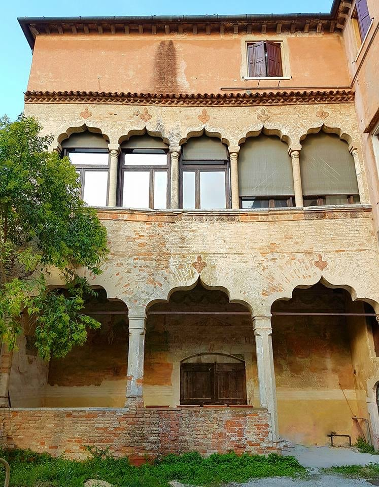
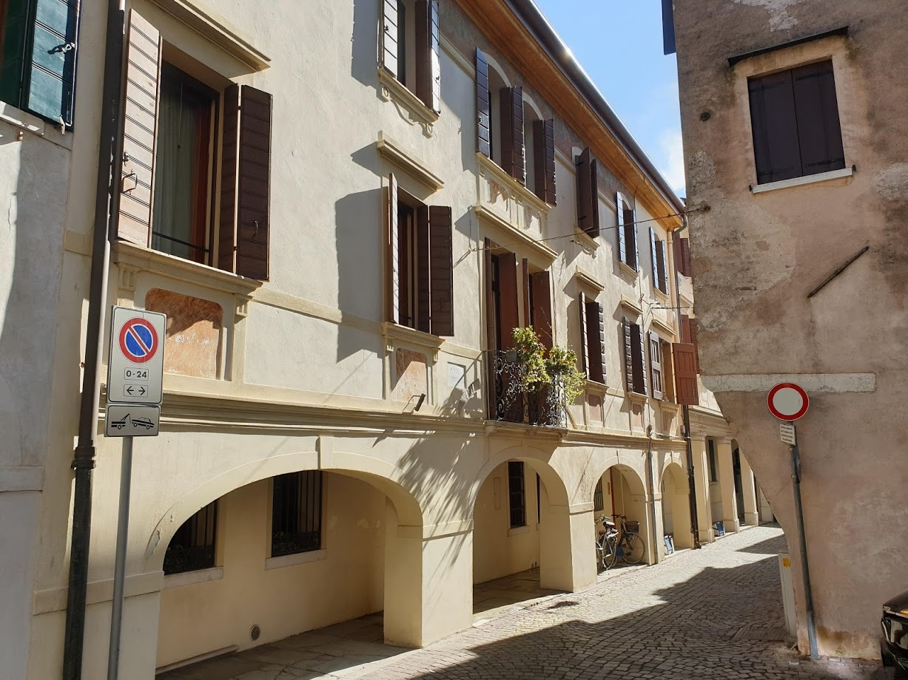
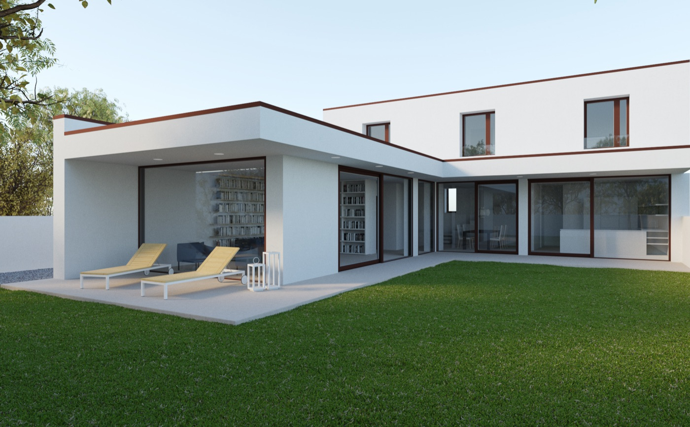

Palazzo Rinaldi, TrevisoRestauro conservativo
Costruzioni e restauri · Treviso
Restauriamo Treviso dal 1957.
Palazzi, ville venete, torri e case di centro storico. E nuove costruzioni, chiavi in mano.
- 1957l'anno in cui comincia l'impresa
- Trevisoe provincia, fino ad Asolo
- 5,0su Google, 3 recensioni
- Chiavi in manosopralluogo, lavori, collaudi
01 · Cosa facciamo
Il restauro è il nostro mestiere. Anche quando si costruisce da zero.
Siamo specializzati in
- 01Restauro di edifici storici tutelati
- 02Recupero di immobili nei centri storici
- 03Recupero di monumenti storici tutelati
- 04Consolidamenti strutturali
- 05Facciate interne ed esterne affrescate
- 06Restauro conservativo, artistico e architettonico
Lavoriamo su
- 07Ville venete e rustici
- 08Case coloniche e case rurali
- 09Palazzi
- 10Nuove costruzioni ad uso abitazione
- 11Ampliamenti, loft, manutenzione
- 12Attività commerciali e industriali
02 · Cantieri
Treviso, un palazzo alla volta.

03 · L'impresa
Un nome di famiglia, sui cantieri di Treviso da oltre sessant'anni.
Camillo Mardegan apre l'impresa nel 1957. Oggi la guida il geometra Cesare Mardegan, con uno staff di tecnici e maestranze in continuo aggiornamento sulle tecniche di costruzione nuove.
Lavoriamo per privati, aziende, enti pubblici e liberi professionisti, in città e in provincia.
- Consolidamenti al carbonio
- Interventi con resine
- Isolamento termico
- Isolamento acustico
"Professionale, ottima qualità."
Giorgio D., recensione Google
04 · Chiavi in mano
Un solo interlocutore, dal primo sopralluogo al collaudo.
- 1
Sopralluogo
Veniamo a vedere l'edificio, le murature, i solai e i vincoli. Da lì nasce il preventivo.
- 2
Esecuzione dei lavori
Le nostre squadre in cantiere, con le tecniche che il palazzo richiede: dal consolidamento alle finiture.
- 3
Collaudi
Verifiche finali e consegna della casa pronta da vivere.

Chi sa restaurare, costruisce meglio.
Dal Residence Ottavi, 20 appartamenti con garage interrato, a un condominio in classe A++ autonomo dal punto di vista energetico, a Casa Nina: ristrutturazione e ampliamento di una casa esistente.
05 · Contatti
Avete un edificio da restaurare o una casa da costruire?
Scriveteci due righe o chiamate: fissiamo un sopralluogo.
- Telefono335 648 6533
- WhatsAppScrivici su WhatsApp
- SedeVia A. A. Michieli 30, 31100 Treviso
Via Michieli 30
31100 Treviso